Frederick Arthur Bridgman (1847-1928) va ser un pintor i aquarel·lista nord-americà conegut pel seu estil orientalista. Va viatjar al Pròxim Orient i a l'Àfrica del Nord, fet que va influir profundament en la seva obra. Les seves pintures es caracteritzen per una gran atenció al detall, la llum i el color, capturant escenes exòtiques de la vida quotidiana, els paisatges i la cultura d’aquestes regions.
Algunes de les seves obres
 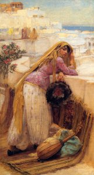
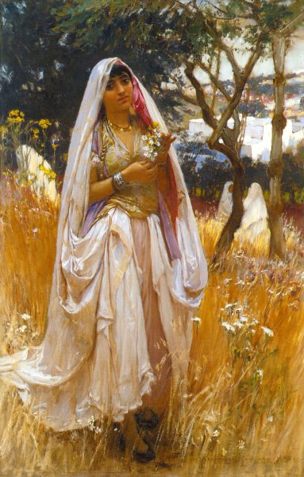
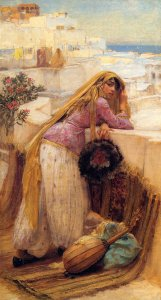
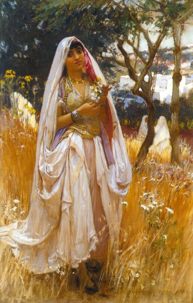
 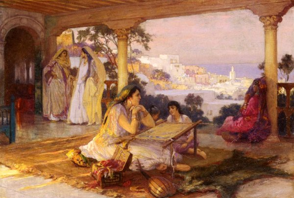
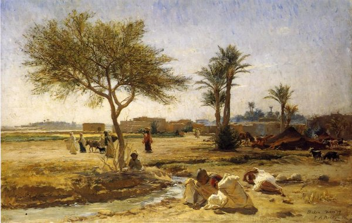
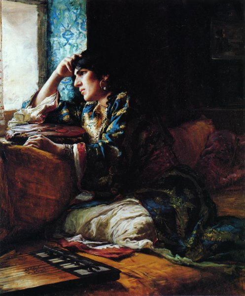
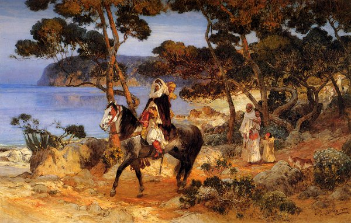
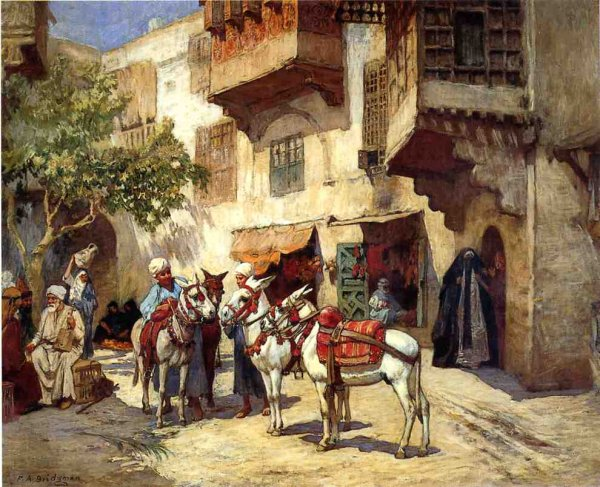
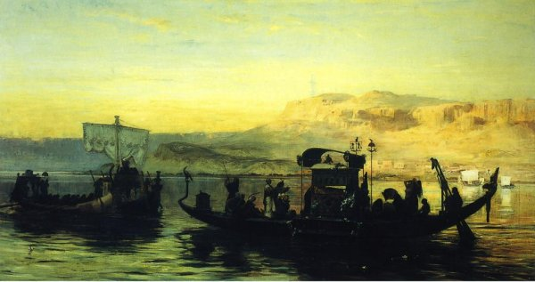
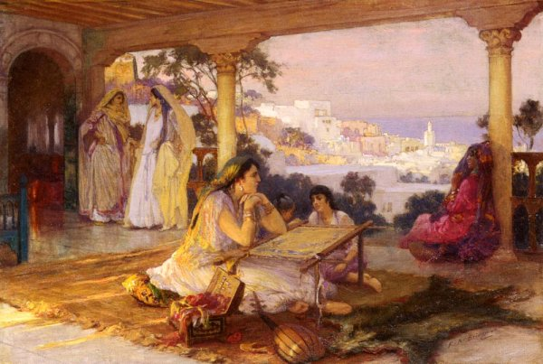
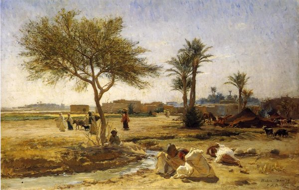
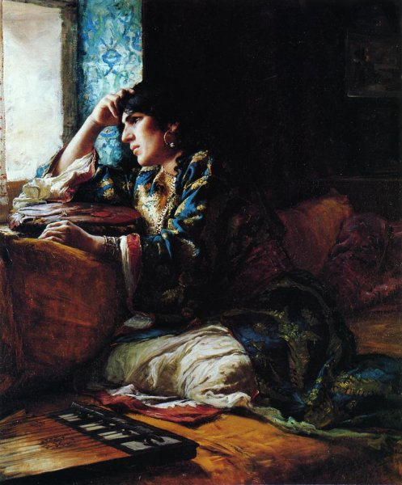
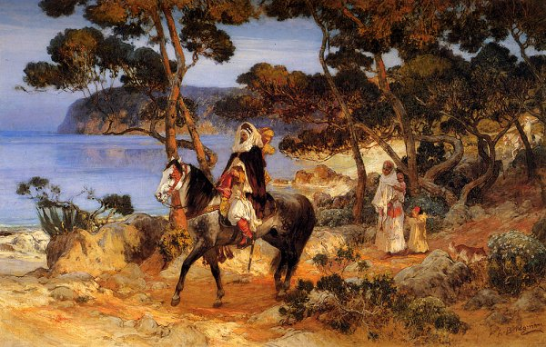
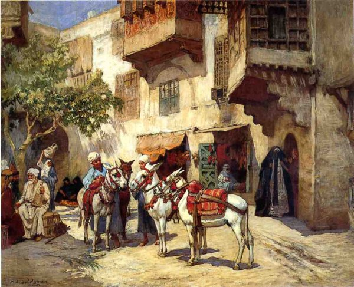
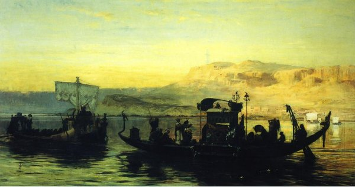